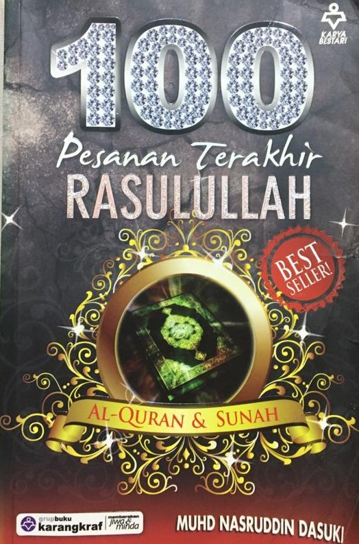

PRELOVED BOOKSTORE | 

100 Pesanan Terakhir Rasulullah
Preloved Price: RM 5.00
Category: Islamic Book
Summary: Kehidupan ini sememangnya memiliki rahsia yang tersembunyi. Ada kala apa yang kita harapkan tidak menjadi, sebaliknya apa yang tidak diminta kita memperolehnya. Usah cepat berputus asa dengan rahmat ilahi dan terus menghukum bahawa doa kita tidak diperkenankan. Maka untuk kesejahteraan di dunia dan akhirat, kita perlu sentiasa mengingati pesanan Rasulullah S.A.W agar tidak lalai dengan tipu daya nikmat dunia. Meskipun Rasulullah S.A.W telah meninggalkan kita namun titip nya iaitu al-Quran dan as-Sunah tetap dijadikan panduan. 100 Pesanan Terakhir Rasulullah bisa menggetarkan setangkai hati kita andai ada pesanan ini jauh daripada jangkauan apa yang dilaksanakan. Jadikanlah peringatan ini sebagai kayu ukur amalan kita. Moga ada kebaikan yang dapat dikongsi bersama.Insya-Allah.
| Title | 100 Pesanan Terakhir Rasulullah |
|---|---|
| ISBN | 9789678603782 |
| Format: | : Paperback |
| Author: | Muhammad Alexander |
| Category: | Islamic Book |
| Publisher: | Karya Bestari Sdn.Bhd. |
*Reminder: Please copy&paste the title of the book to put into the order list and also please calculate the price of the book your own to pay it on checkout form.